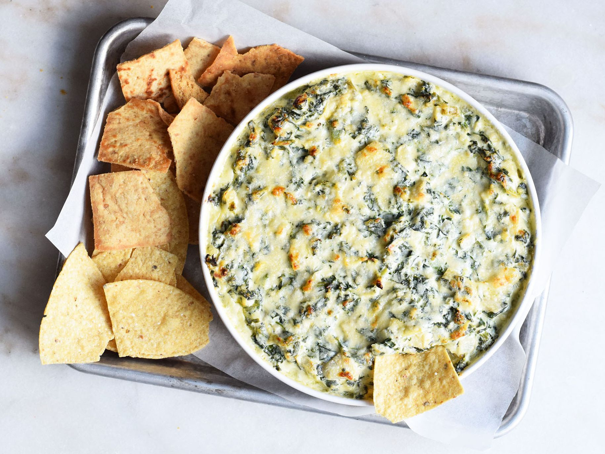

Spinach Artichoke Dip

This dip is amazing – so cheesy and fragrant.
If you don’t like artichokes, don’t worry – you’ll never know they’re in there!
Ingredients
- 1 (14 ounce) can artichoke hearts, drained and chopped
- 1 (10 ounce) package frozen chopped spinach, thawed and drained
- 1 cup mayonnaise
- 1 cup grated parmesan cheese
- 2½ cups shredded Monterey Jack cheese
Steps
- Preheat oven to 350 degrees F (175 degrees C). Lightly grease a 1 quart baking dish.
- In a medium bowl, mix together artichoke hearts, spinach, mayonnaise, Parmesan cheese and 2 cups Monterey Jack cheese. Transfer mixture to the prepared baking dish, and sprinkle with remaining 1/2 cup of Monterey Jack cheese.
- Bake in the center of the preheated oven until the cheese is melted, about 15 minutes.
Home